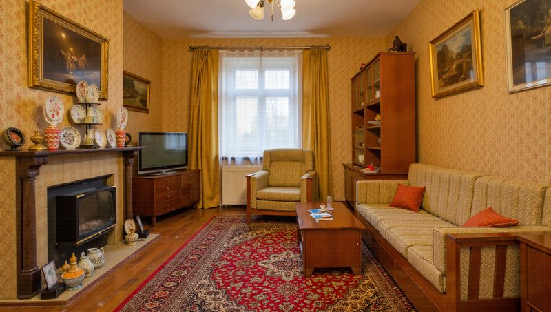
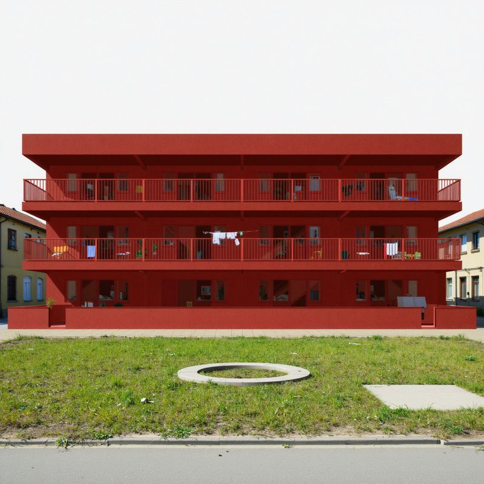
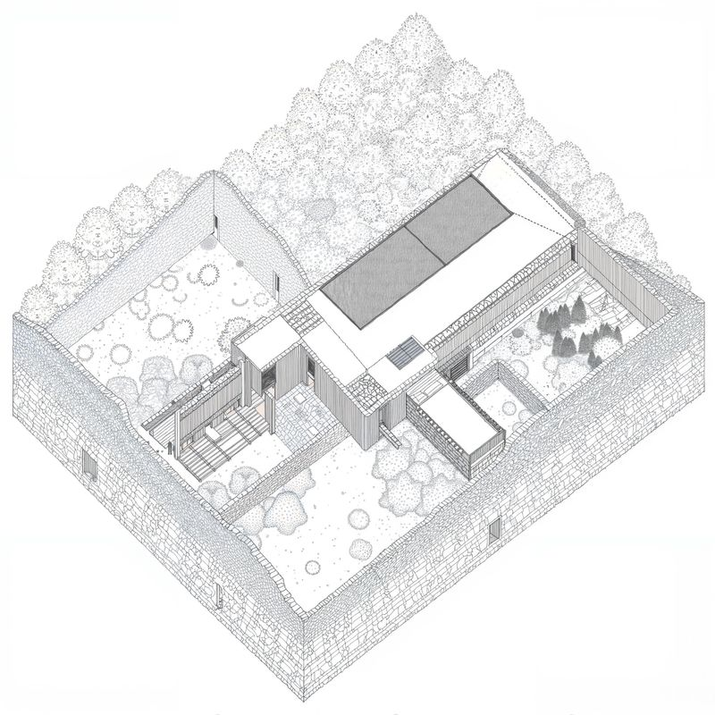

Projects

Memory
Teaching a razor-sharp model the grain, blur and quiet of old photographs.

Bambu
A LoRA for traditional bamboo joinery: lashing, dowels and culm bundles across vernaculars.

le_zine
Three LoRAs trained on film, old magazines and photography, to pull AI images back toward real design.

1970s Soviet Interiors
Does a culturally specific dataset remove a model's Western bias? Not entirely.

2.5D World
Using a flat, collage-like drawing style to escape the smudged look of "realistic" AI images.

pencil_drawing
A failed render LoRA, then a pencil-drawing LoRA that imagines the sustainable buildings of tomorrow.

Future Facades
Two LoRAs to get parametric brick facades with bricks at the right scale.

Crockett · Villette · Oudolf
Can a LoRA rebuild a real, demolished building, not just something that looks like it?

Sand
Using dune geometry, not sand texture, to bend a facade's mullion grid.

AI as a Drawing Tool
Generating architectural elevations in the flat, colourful style of Sander Patelski.

Amabuye
Rwanda's volcanic stone, a material the base model reduces to a hut, carried into contemporary form.
Upper Peninsula Understory Futures
Speculating on future plant species in Michigan's Upper Peninsula as the climate shifts.

Liturgies of a Lost Future
Ancient and futuristic, sacred and technological: can AI hold opposites in one coherent scene?
Lithic Hospitality
Against the average: teaching the model the yellow stone, stairs and open doors of As-Salt, Jordan.

Render a Lamp
Style + form = ? A SANAA-style LoRA and a LoRA of Yewon's own product design, mixed to render a planter lamp.